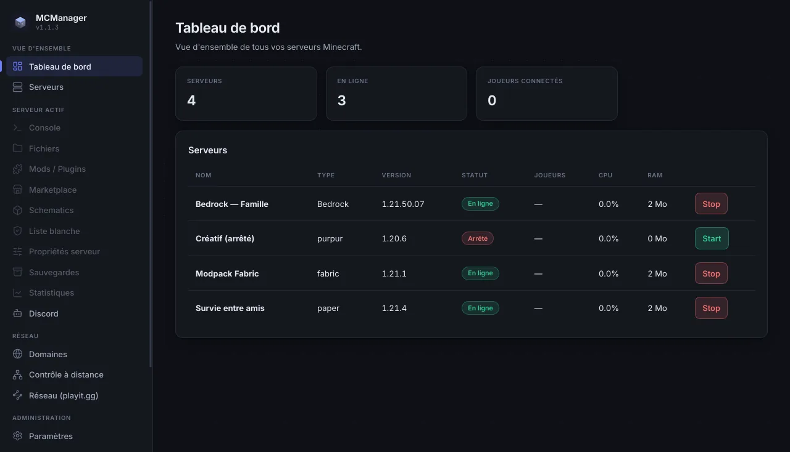
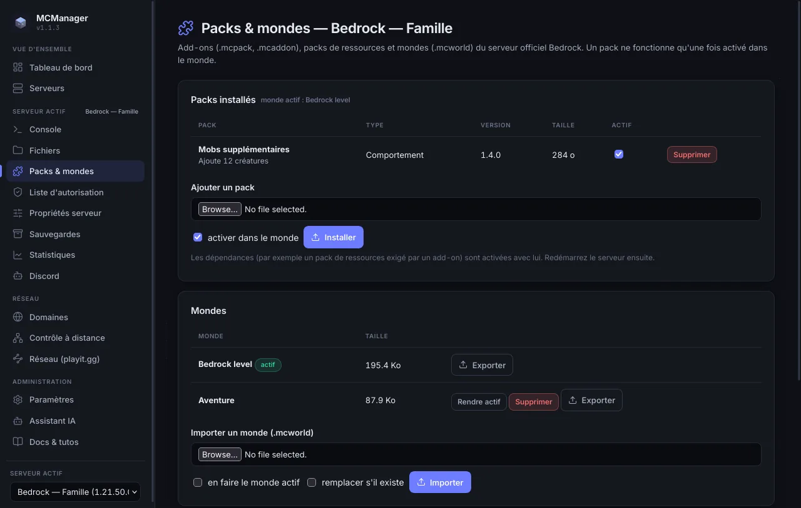
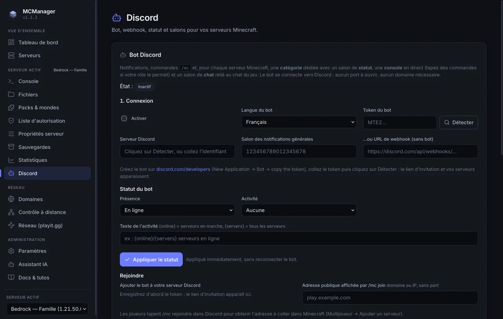
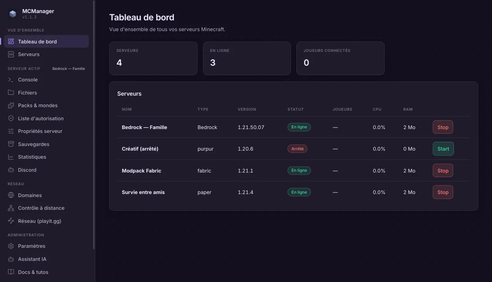
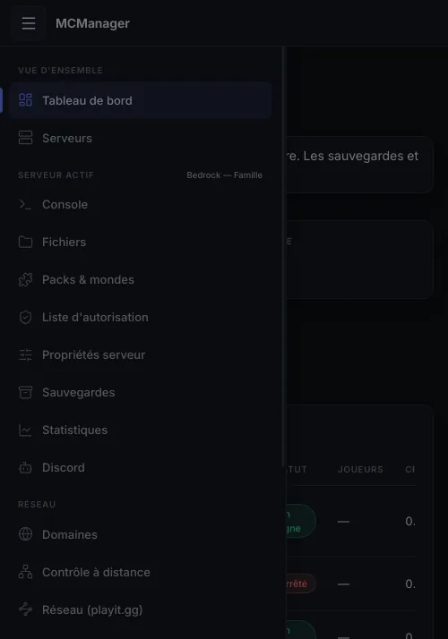

Vos serveurs Minecraft, Java et Bedrock, au même endroit.
Une interface web pour créer, surveiller et sauvegarder vos serveurs : console en direct, mods et plugins, bot Discord, et plusieurs machines réunies dans un seul tableau de bord. Libre, sans compte, sans abonnement.
- Licence MIT
- Windows, macOS, Linux, Docker
- x86_64 et ARM64 (Raspberry Pi 5 compris)

Tout ce qu'il faut pour faire tourner un serveur, sans la corvée
Les mêmes écrans pour un serveur sur votre PC, sur un Raspberry Pi ou sur un VPS. Voici ce qui change le plus la vie.
Java et Bedrock dans la même interface
Vanilla, Paper, Purpur, Spigot, Fabric, Forge, NeoForge côté Java. Serveur officiel, Preview, PocketMine-MP et Nukkit côté Bedrock. Les versions viennent des API officielles, MCManager télécharge et configure le serveur.

Toujours allumés
Fermer la page n'arrête rien. Les serveurs repartent seuls avec MCManager, même après une mise à jour.
Sauvegardes sûres
Programmées, avec rétention, écrites puis renommées : jamais de zip à moitié fini dans la liste. Sauvegarde à chaud pour Bedrock.
Assistant intégré
Anthropic, OpenAI, Gemini, Ollama ou OmniRoute. Il lit l'état et la console, cherche sur Modrinth, et ne modifie rien sans votre accord.
Mods et plugins
Marketplace Modrinth filtré par loader et version, préréglages (anti-cheat, EssentialsX, LuckPerms), diagnostic de crash qui isole le mod fautif.
Discord
Un salon par serveur : statut, console en direct, chat relié au jeu. Commande /mc rejoindre pour donner l'adresse.

Droits et sécurité
Un niveau par compte et par serveur, refus par défaut, double authentification, journal d'audit, HTTPS intégré.
Votre interface
Six thèmes ou vos propres couleurs, accent libre, fond animé réglable, CSS personnalisé. Les thèmes s'exportent en JSON.

Sur téléphone aussi
Un menu à tiroir et des tableaux défilants : vous redémarrez un serveur depuis le canapé.

Bedrock, pour les joueurs sur mobile, console et Windows
Les joueurs se connectent en UDP, port 19132 par défaut. MCManager gère le serveur comme n'importe quel autre.
Quatre serveurs au choix
- Officiel Mojang et sa version Preview, sur x86_64 (Linux, Windows).
- PocketMine-MP (plugins PHP) et Nukkit (plugins Java), qui tournent aussi sur ARM et Raspberry Pi.
- Geyser et Floodgate en un clic pour faire jouer des Bedrock sur un serveur Java.
Ce que vous gérez depuis l'interface
- Add-ons
.mcpacket.mcaddon, activés par monde avec leurs dépendances. - Mondes
.mcworld: import, export, changement de monde actif. - Liste d'autorisation et permissions, appliquées à chaud.
- Propriétés vérifiées avant enregistrement, sauvegarde sans arrêter le serveur.
Le serveur officiel de Mojang n'existe que pour x86_64 : sur un Raspberry Pi, choisissez PocketMine-MP ou Nukkit.
Plusieurs machines, un seul tableau de bord
Jumelez un VPS, un serveur maison ou un Raspberry Pi : leurs serveurs apparaissent comme les vôtres, avec une étiquette « distant ».
Transferts reprenables
Copier, déplacer ou rapatrier un serveur, envoyer des sauvegardes. Fichiers vérifiés par SHA-256, reprise après coupure, et rien n'est supprimé avant d'avoir été retrouvé à destination.
Miroir de sauvegardes
Chaque nouvelle sauvegarde part automatiquement vers une autre machine. Vous pouvez aussi mettre à jour MCManager sur une machine distante depuis l'interface.
Modèles de serveur
Enregistrez la configuration d'un serveur, plugins compris, et recréez-en d'autres sans rien télécharger.
Nouveautés de la 1.1.3
- Minecraft Bedrock : quatre types de serveur, packs et mondes, liste d'autorisation, sauvegarde à chaud, veille UDP.
- Reprise des serveurs et service de démarrage en une commande :
mcmanager-server --install-service. - Transferts entre machines, miroir de sauvegardes, modèles de serveur, mise à jour d'une machine distante.
- HTTPS natif sans reverse proxy, et migration automatique des anciennes données avec copie de sécurité.
- Discord a sa propre entrée dans le menu, à côté de la console et des fichiers.
Plateformes prises en charge
Les mêmes fonctions partout. MCManager est un programme natif, sans Node ni Python à installer.
| Système | Processeurs | Format |
|---|---|---|
| Windows | x64 et ARM64 | Installateur .exe ou archive portable |
| macOS 11 et plus | Intel (Apple Silicon via Rosetta 2) | MCManager.app dans un .dmg |
| Linux | x64 et ARM64 | .deb, .rpm, archive portable |
| Docker | amd64 et arm64 | Image du mode serveur, avec connexion multi-utilisateurs |
Sur Mac, l'application n'est pas notarisée : au premier lancement, clic droit puis Ouvrir. Il n'y a pas de build Apple Silicon natif.
Installer MCManager
Une ligne de commande, ou le téléchargement direct depuis la page des versions.
Installateur classique avec raccourci et désinstallation, ou une ligne PowerShell.
Téléchargeriex (irm mcmanager.pages.dev/install.ps1)Détecte la distribution et le processeur (.deb ou .rpm, x86_64 ou ARM64) et ajoute le raccourci au menu.
curl -fsSL mcmanager.pages.dev/install.sh | bashMac Intel, macOS 11 ou plus : MCManager.app dans un .dmg, ou la même ligne que sous Linux.
curl -fsSL mcmanager.pages.dev/install.sh | bashUn VPS, un Raspberry Pi ou Docker ? Le mode serveur (mcmanager-server) ajoute la connexion multi-comptes, le contrôle à distance et le service de démarrage. Lire la documentation du mode serveur.